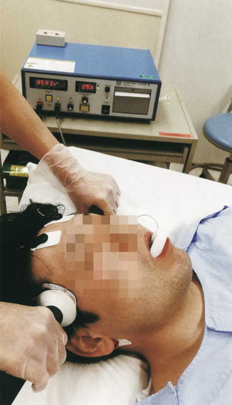
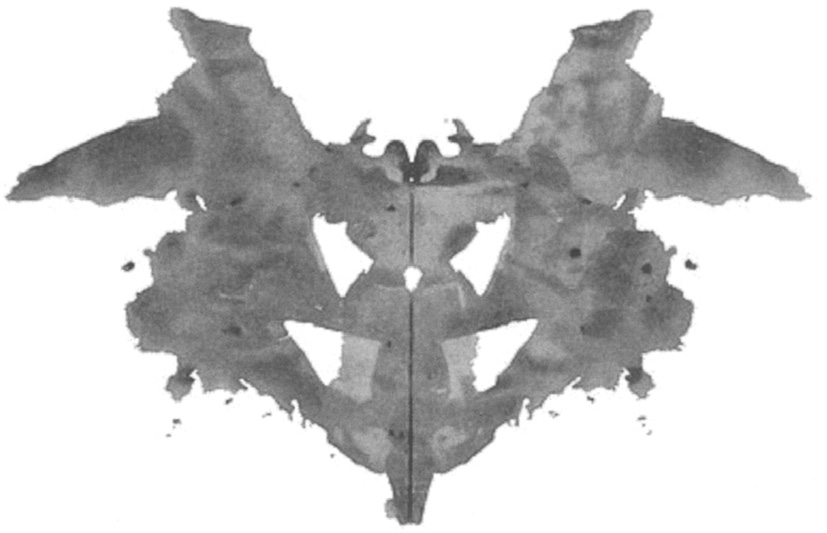

MECマイナー講座 '26 | 精神科
第
1
章｜精神科の基本
解答・解説集 全73問収録
73
問
★問題
21問
A問題（★問題）
B問題（★問題）
A問題
B問題
§
A問題（★問題）
Q.1〜Q.11
Q.1
(120F-45)
★
58%
3歳の男児。言葉の遅れを心配した母親に連れられて来院した。襟のついた服や長いズボンをはくことを嫌がり、家ではおもちゃを一列に並べる一人遊びをしていることが多いという。聴力検査では異常を認めない。
この患児に用いる検査で適切なのはどれか。
ａ 田中・Binet 知能検査
ｂ 前頭葉機能検査〈FAB〉
ｃ 標準型失語症検査〈SLTA〉
ｄ 改訂長谷川式簡易知能評価スケール
ｅ Wechsler 児童用知能検査〈WISC-Ⅳ〉
✅
ａ 田中・Binet 知能検査
感覚過敏・常同的な一列並べ・一人遊びから自閉スペクトラム症が疑われる3歳児。この年齢の知能・発達評価には2歳から施行できる田中・Binet知能検査が適する。
🎯 国試ポイント
知能検査は
適応年齢
で選ぶ。
田中・Binet知能検査
は2歳〜成人に使え幼児にも施行可能。
WISC〈児童用Wechsler〉は5歳0か月〜16歳11か月
が適応で、3歳には使えないのが本問の分かれ目。
□ 各検査の対象
検査
対象
田中・Binet
2歳〜成人の知能（幼児OK）
WISC-Ⅳ
5歳0か月〜16歳11か月の児童
FAB
前頭葉機能（成人）
SLTA
失語症（言語）
改訂長谷川式〈HDS-R〉
高齢者の認知症スクリーニング
Q.2
(119C-11)
★
86%
思路障害はどれか。
ａ 強迫観念
ｂ 思考吹入
ｃ 心気妄想
ｄ 広場恐怖
ｅ 滅裂思考
✅
ｅ 滅裂思考
思路（思考の流れ・つながり）の障害は滅裂思考。連合弛緩が高度になり文脈のつながりが失われた状態である。
🎯 国試ポイント
思考の障害は3群に整理する。
思路（流れ）＝観念奔逸・思考制止・思考途絶・連合弛緩／滅裂思考・保続
。
思考内容＝妄想・強迫観念・心気
。
思考体験（自我）＝思考吹入・思考奪取・思考伝播
。
□ 選択肢の帰属
強迫観念＝思考内容、思考吹入＝自我障害、心気妄想＝思考内容（妄想）、広場恐怖＝恐怖症（不安）。思路障害は
滅裂思考のみ
。
Q.3
(119C-46)
★
CBT
89%
24歳の女性。自傷行為を繰り返すためパートナーに付き添われて来院した。パートナーの言動に不満があると、怒鳴るなどの行為が止まらず、衝動的に市販の総合感冒薬を過量に服用したり、前腕をカミソリで自傷したりする。大学院を卒業後、研究職に就いている。
この患者に行う心理検査はどれか。
ａ Rorschach テスト
ｂ 前頭葉機能検査〈FAB〉
ｃ Wechsler 成人知能検査
ｄ リバーミード行動記憶検査
ｅ Mini-Mental State Examination〈MMSE〉
✅
ａ Rorschach テスト
見捨てられ不安・衝動性・自傷の反復から境界性パーソナリティ障害が疑われる。人格の深層を評価する投影法のRorschachテストが適する。
🎯 国試ポイント
投影法（Rorschach・TAT・SCT・バウムテスト）
はあいまいな刺激への反応から
人格・葛藤の深層
を評価する。パーソナリティ障害の評価に用いる。
□ ほかの検査
FAB＝前頭葉機能、WAIS＝知能、RBMT＝日常記憶（リハビリ）、MMSE＝認知症スクリーニング。いずれも人格評価には向かない。
Q.4
(119E-19)
★
必修
83%
幻覚を強く示唆する患者の発言はどれか。
ａ 「（人から見られている場面で）とても緊張します」
ｂ 「（道を歩きながら）知らない人が私を見て笑うのです」
ｃ 「（通常の食事をしながら）砂を噛んでいるように感じます」
ｄ 「（天井のしみを見ながら）あれは私を殺そうとしているサインです」
ｅ 「（鳴っていない携帯電話を見せながら）今もこの電話の着信音がやまないのです」
✅
ｅ 鳴っていない電話の着信音が聞こえる
対象（実在の音）が無いのに知覚が生じている＝幻聴で、幻覚を最も強く示唆する。
🎯 国試ポイント
幻覚＝対象なき知覚
。実在しない刺激をありありと知覚する。
錯覚（実在する刺激の誤認）や妄想（誤った確信）と区別
する。
□ 各発言の解釈
a＝社交不安（対人緊張）、b＝関係妄想、c＝離人・体感の異常、d＝妄想知覚、e＝
幻聴
。
Q.5
(119F-4)
★
92%
抗精神病薬の作用と関連しているのはどれか。
ａ ドパミン受容体
ｂ セロトニン受容体
ｃ モノアミンオキシダーゼ
ｄ アセチルコリンエステラーゼ
ｅ ノルアドレナリントランスポーター
✅
ａ ドパミン受容体
抗精神病薬の主作用は中脳辺縁系のドパミンD2受容体遮断で、これにより幻覚・妄想（陽性症状）を抑える。
🎯 国試ポイント
定型抗精神病薬＝D2受容体遮断
（黒質線条体系の遮断で錐体外路症状、漏斗下垂体系の遮断で高プロラクチン血症）。
非定型＝D2＋5-HT2遮断
でEPSが少ない。
□ ほかの標的
MAO＝抗うつ薬（MAO阻害薬）、AChE＝抗認知症薬（ドネペジル等）、ノルアドレナリントランスポーター＝SNRI・三環系抗うつ薬。
Q.6
(119F-20)
★
48%
精神症状と障害される精神機能の組合せで正しいのはどれか。
ａ 恐怖 ─ 思考
ｂ 無為 ─ 意欲
ｃ 離人症 ─ 発達
ｄ 両価性 ─ 自我
ｅ 学習障害 ─ 知能
✅
ｂ 無為 ─ 意欲
無為（アパシー）は意欲・自発性の低下であり、意欲の障害に分類される。
🎯 国試ポイント
症状がどの精神機能の障害かを対応づける。
無為・制止＝意欲
、
恐怖＝感情
、
離人症＝自我意識
、
両価性＝感情／意欲
、学習障害＝特異的な学習能力（知能全般の障害ではない）。
Q.7
(117A-33)
★
96%
18歳の男子。3か月前から周囲の視線が気になると外出するのを嫌がり、この2週間は自宅にいても誰かに部屋の中を覗かれているし、部屋で話す声を盗聴されていると訴えるため、両親に連れられて精神科を受診した。妄想が強いと判断され、抗精神病薬を処方された。服薬2日目から足がむずむずすると部屋の中を歩き回ることが多くなり、夜はむずむず感のため、不眠を訴えるようになった。
このむずむず感について正しいのはどれか。
ａ ジストニアと呼ばれる。
ｂ 両下肢の知覚低下を伴う。
ｃ 睡眠時無呼吸症候群を伴う。
ｄ 脳波異常を伴う。
ｅ 抗精神病薬の減量により軽快する。
✅
ｅ 抗精神病薬の減量により軽快する
服薬後まもなく出現した静座不能（じっとしていられずに歩き回る）＝アカシジア。原因薬の減量・中止で軽快する。
💊 アカシジア
抗精神病薬による
急性の錐体外路症状
の一つ。下肢を中心とした
むずむず感と静座不能
（じっと座っていられない）を特徴とする。原因薬の減量・変更に加え、抗コリン薬・β遮断薬・ベンゾジアゼピンが用いられる。
🎯 国試ポイント
薬剤性錐体外路症状（EPS）の4徴＝
急性ジストニア・アカシジア・薬剤性パーキンソニズム・遅発性ジスキネジア
。ジストニアとアカシジアは別物（a✗）。知覚障害・脳波異常は伴わない（b・d✗）。
Q.8
(117F-5)
★
CBT
97%
せん妄について正しいのはどれか。3つ選べ。
ａ 脱水は発症要因となる。
ｂ 治療によらず改善は見込めない。
ｃ 数時間から数日で急速に発症する。
ｄ 身体疾患を背景に持つことが必須である。
ｅ 日内変動がありしばしば夜間に増悪する。
✅
ａ・ｃ・ｅ
せん妄は脱水などを誘因に急性発症し、日内変動を示し夜間に増悪する（夜間せん妄）。
🌀 せん妄とは
身体疾患・薬剤・環境変化などを背景に生じる
急性・変動性の意識障害（軽度の意識混濁＋注意障害）
。幻覚（特に幻視）・興奮・見当識障害を伴う。原因の除去で可逆的に改善しうる（b✗）。
🎯 国試ポイント
誘因は
脱水・感染・薬剤（BZDなど）・電解質異常・術後・環境変化
。
身体疾患だけでなく薬剤・環境でも起こる
ため「身体疾患が必須」は誤り（d✗）。
Q.9
(117F-17)
★
51%
「周りの景色を見ても生き生きと感じられない。感情がわいてこない」と訴える患者にはどの異常があるか。
ａ 意識
ｂ 気分
ｃ 知覚
ｄ 見当識
ｅ 自我意識
✅
ｅ 自我意識
外界や自分の感情を「生き生きと実感できない」＝離人・現実感消失で、自我意識（能動性・実存の感覚）の障害である。
🎯 国試ポイント
離人症状
＝自分や外界を「自分のもの」として実感できない、現実感が薄い状態で
自我意識（自我の能動性・単一性・同一性・境界）の障害
。うつ病・統合失調症・解離などで幅広くみられる。
Q.10
(117F-24)
★
93%
統合失調症を主な対象として、精神症状の包括的な評価尺度として使用されるのはどれか。
ａ Rorschach テスト
ｂ 状態特性不安検査〈STAI〉
ｃ リバーミード行動記憶検査〈RBMT〉
ｄ Mini-Mental State Examination〈MMSE〉
ｅ 簡易精神症状評価尺度［Brief Psychiatric Rating Scale〈BPRS〉]
✅
ｅ BPRS
BPRS〈簡易精神症状評価尺度〉は統合失調症を主対象に、幻覚・妄想・陰性症状などを包括的に点数化する評価尺度。
🎯 国試ポイント
統合失調症の症状評価尺度＝
BPRS・PANSS
。STAI＝不安、RBMT＝日常記憶、MMSE＝認知症スクリーニング、Rorschach＝人格（投影法）。
Q.11
(116D-17)
★
98%
外見は40歳前後にみえる男性。路上にうずくまっているところを警察官に保護されたが、「自分が誰だかわからない」と言うため、警察官に伴われて来院した。身元がわかるような所持品はなかった。会話は可能で、関西弁を話したが、関西地方に住んだ記憶はないという。外傷はなく、血液検査、脳画像検査、脳波などの身体的な精査では異常はなく、保護されてからの記憶は保持されていた。
この患者でみられる可能性が最も高い特徴はどれか。
ａ 替え玉妄想がみられる。
ｂ 切符を買うなどの一般的な行動はできる。
ｃ 記憶がないことについて深刻に悩んでいる。
ｄ 抗精神病薬を投与する必要がある。
ｅ アルツハイマー型認知症の初期症状である。
✅
ｂ 切符を買うなどの一般的な行動はできる
自分の身元（自伝的記憶）を選択的に失う全生活史健忘（解離性健忘）。手続き記憶・一般的知識は保たれ、切符購入など日常行動は可能。
🧠 全生活史健忘
心因性（解離性）の健忘で、
自己の重要な自伝的記憶を選択的・広範に喪失
する。器質的異常は認めず（本問でも身体精査正常）、
言語能力・手続き記憶・一般知識は保持
される。
🎯 国試ポイント
解離性健忘の特徴＝器質異常なし・自己同一性の喪失・
記憶喪失に無頓着なことが多い（c✗）
。替え玉妄想＝Capgras症候群（別概念、a✗）、抗精神病薬は不要（d✗）、認知症とは経過が異なる（e✗）。
§
B問題（★問題）
Q.12〜Q.21
Q.12
(115A-23)
★
35%
35歳の男性。テレビを見ている時に口をもぐもぐと動かす、舌を突き出すなどの動きがみられることを、家族に指摘されたと訴えて来院した。約6か月前からその動きがみられるという。30歳ころ、幻覚妄想状態を呈して抗精神病薬を投与され、以後、服薬を継続中である。
この動きについて正しいのはどれか。
ａ 睡眠中は消失する。
ｂ 抗Parkinson病薬が著効する。
ｃ 抗精神病薬に特異的な副作用である。
ｄ 口の動きに注意を向けさせると増悪する。
ｅ 片側上下肢を投げ出すような不随意運動を伴う。
✅
ａ 睡眠中は消失する
長期の抗精神病薬服用後に生じた口部・舌の反復性不随意運動＝遅発性ジスキネジア。睡眠中は消失するのが不随意運動の一般的特徴である。
💊 遅発性ジスキネジア〈TD〉
抗精神病薬（D2遮断薬）を
長期服用した後に遅れて出現
する不随意運動。口・舌・顔面の
オーラルジスキネジア
が典型。難治性で、原因薬の減量で一時的に悪化することもある。
🎯 国試ポイント
睡眠中は消失（a○）。抗パーキンソン薬（抗コリン薬）はむしろ悪化させうる（b✗）。制吐薬など他のD2遮断薬でも起こり「抗精神病薬に特異的」ではない（c✗）。注意を向けると軽減し、他事に集中させると増悪する（d✗）。片側の投げ出す運動はバリズムで別物（e✗）。
Q.13
(115A-24)
★
83%
55歳の男性。夜中の記憶がないことを主訴に妻とともに来院した。数年前に不眠に対して睡眠薬を処方されて以来、継続して服用し、仕事を続けていた。昨日、午後11時に就床したが、午前1時頃に友人からの電話でカラオケ店に行き宴会に参加し、午前4時頃帰宅した。夜中のことを全く覚えていないが、友人によると普通に歌い飲食したという。飲酒はしていない。妻によると2か月前くらいから夜中に食事をしたりコンビニに行ったりしたことを翌朝覚えていないことが3回あった。
この患者で考えられる疾患はどれか。
ａ 夜間せん妄
ｂ 一過性全健忘
ｃ 全生活史健忘
ｄ 睡眠薬による前向健忘
ｅ レム〈REM〉睡眠行動障害
✅
ｄ 睡眠薬による前向健忘
睡眠薬服用後、外見上は普通に行動しているのに服用後の出来事を覚えていない＝前向性健忘。ベンゾジアゼピン系・非ベンゾジアゼピン系睡眠薬の代表的副作用。
🎯 国試ポイント
前向健忘＝服用（発症）後の新しい記憶が作れない
。BZD系や
ゾルピデム等の非BZD系睡眠薬
で、服薬後に行動（睡眠随伴症）してもそれを記憶できないことがある。飲酒併用や増量で助長される。
□ 鑑別
夜間せん妄＝意識障害・変動あり／一過性全健忘〈TGA〉＝突然の前向健忘発作で数時間内に回復／全生活史健忘＝心因性で自己同一性喪失／REM睡眠行動障害＝夢内容に一致した行動（高齢男性・Parkinson関連）。
Q.14
(115C-23)
★
📷 画像
97%
精神科における治療時の写真を示す。
この治療が有効な疾患はどれか。

ａ てんかん
ｂ 強迫性障害
ｃ 緊張型頭痛
ｄ うつ病性障害
ｅ 注意欠陥多動性障害〈ADHD〉
✅
ｄ うつ病性障害
両側前頭部に電極を当てて通電する電気けいれん療法〈ECT〉の写真。重症うつ病が代表的な適応疾患である。
⚡ 電気けいれん療法〈ECT〉
頭部に通電して人工的にけいれん発作を誘発する治療。現在は麻酔・筋弛緩薬を用いる
修正型ECT〈m-ECT〉
が主流。
🎯 国試ポイント
適応＝
重症うつ病（希死念慮・昏迷・拒食・薬物抵抗性）
、緊張病、治療抵抗性・興奮の強い統合失調症など。
てんかんはむしろ発作を誘発するため適応外（a✗）
。効果発現が速いのが利点。
Q.15
(113F-28)
★
📷 画像
29%
ある心理テストで用いられる図版の一部を示す。
この心理テストについて正しいのはどれか。

ａ 無彩色と有彩色の図版からなる。
ｂ テスト全体には5分程度を要する。
ｃ テスト全体は4枚の図版からなる。
ｄ 被験者は自ら質問紙に回答を記入する。
ｅ 精神疾患のスクリーニングが目的である。
✅
ａ 無彩色と有彩色の図版からなる
左右対称のインクのしみ（図版）はRorschachテスト。全10枚で、無彩色（黒）と有彩色（赤・多色）の図版から構成される。
🎯 国試ポイント
Rorschachテスト＝投影法の代表
。
10枚の図版（無彩色＋有彩色）
を1枚ずつ提示し「何に見えるか」を自由に語らせ、人格の深層を評価する。所要時間は長く（数十分〜）、検査者が反応を記録する（自記式ではない）。
スクリーニング目的ではない（e✗）
。
Q.16
(111G-9)
★
65%
心理・精神機能検査のうち、直接患者に行わないのはどれか。
ａ 津守・稲毛式発達検査
ｂ 田中・Binet 式知能検査
ｃ 状態特性不安検査〈STAI〉
ｄ Minnesota 多面人格検査〈MMPI〉
ｅ Mini-Mental State Examination〈MMSE〉
✅
ａ 津守・稲毛式発達検査
津守・稲毛式は乳幼児の発達を養育者への問診で評価する検査で、被検児本人に直接施行しない。
🎯 国試ポイント
津守・稲毛式発達検査＝養育者からの聞き取り
で0〜7歳の発達を評価。ほかの選択肢（田中・Binet、STAI、MMPI、MMSE）はいずれも
被検者本人に直接実施
する。
Q.17
(111H-17)
★
必修
81%
幻視が多いのはどれか。
ａ 躁病
ｂ うつ病
ｃ せん妄
ｄ 統合失調症
ｅ 心的外傷後ストレス障害
✅
ｃ せん妄
せん妄などの意識障害（器質性精神障害）では幻視が多い。統合失調症では幻聴が主体である。
🎯 国試ポイント
幻視→器質性を疑う
：せん妄・アルコール離脱（振戦せん妄）・Lewy小体型認知症・薬物中毒など。
統合失調症は幻聴（特に対話・命令形式）が特徴
で幻視は少ない。
Q.18
(110G-34)
★
82%
精神機能とその障害による精神症状との組合せで正しいのはどれか。2つ選べ。
ａ 意識 ─ 幻覚
ｂ 感情 ─ 昏迷
ｃ 気質 ─ 感情失禁
ｄ 思路 ─ 連合弛緩
ｅ 自我意識 ─ 離人症
✅
ｄ・ｅ
思路（思考の流れ）の障害＝連合弛緩、自我意識の障害＝離人症。
🎯 国試ポイント
幻覚は
知覚
の障害（意識ではない）、昏迷は
意欲・精神運動
の障害（感情ではない）、感情失禁は
感情
の障害（脳血管性でみる／気質ではない）。正しい対応は
思路─連合弛緩
と
自我意識─離人症
。
Q.19
(110I-52)
★
92%
62歳の男性。発熱を主訴に来院した。統合失調症のため精神科病院に入退院を繰り返し、ハロペリドール、ゾテピン及びニトラゼパムを服用している。昨日から40℃の発熱と高度の発汗があり受診した。普段より反応が鈍い。意識レベルはJCS Ⅱ-10。体温39.0℃。脈拍112/分。筋強剛が強くみられる。CK 35,000 IU/L（基準30〜140）、クレアチニン2.5mg/dL（前年0.7）、Kﾞ5.3mEq/L。
適切な対応はどれか。
ａ 免疫グロブリン製剤投与
ｂ ステロイドパルス療法
ｃ 抗精神病薬の継続
ｄ 赤血球輸血
ｅ 大量輸液
✅
ｅ 大量輸液
高熱・発汗・筋強剛・意識障害・著明なCK上昇・急性腎障害＝悪性症候群。原因薬（抗精神病薬）の中止と大量輸液（横紋筋融解による腎障害の予防・是正）が基本。
🔥 悪性症候群〈NMS〉
抗精神病薬（D2遮断薬）による重篤な副作用。
高熱・筋強剛・意識障害・自律神経症状（発汗・頻脈）・著明なCK上昇
を呈し、横紋筋融解→急性腎障害をきたす。
🎯 国試ポイント
対応＝
被疑薬の即時中止＋全身管理（大量輸液・冷却）
、必要に応じ
ダントロレン・ブロモクリプチン
。
抗精神病薬の継続（c）は禁忌
。
Q.20
(108D-36)
★
65%
78歳の女性。白内障手術目的で入院中である。1年前からAlzheimer型認知症と診断され薬物療法中で、介護サービスを受けながら独居していた。入院翌日、ベッドから起き上がらず、朝食も摂らず、まとまりのないことを小声でつぶやくのみで質問にほとんど反応がなかった。身体所見・血液生化学・頭部CTに有意な変化はなかった。
最も考えられるのはどれか。
ａ せん妄
ｂ 適応障害
ｃ 解離性障害
ｄ うつ病性昏迷
ｅ 急性ストレス障害
✅
ａ せん妄
認知症の高齢者が入院（環境変化）を契機に、翌日から反応低下・つぶやきを示した＝低活動型せん妄。身体・画像に新規変化がないことが矛盾しない。
🎯 国試ポイント
せん妄には興奮する
過活動型
だけでなく、傾眠・寡動・無反応の
低活動型
があり、うつ病や認知症の悪化と誤認されやすい。
認知症＋入院・手術は最大のせん妄リスク
。
Q.21
(105A-23)
★
98%
35歳の男性。反応が鈍く奇妙な姿勢をとることを心配した会社の上司に伴われて来院した。半年前から「誰もいないのに職場の同僚からの悪口が聞こえてくる」と訴えていた。昨日から「会社に殺される」「考えていることが会社に筒抜けになる」などと独り言をつぶやいていたかと思うと、黙り込んで開眼したまま無反応になった。診察時に右手を挙上させるとそのままの姿勢をいつまでも保持する。
最も考えられる診断はどれか。
ａ うつ病
ｂ 適応障害
ｃ 緊張病症候群
ｄ 広汎性発達障害
ｅ Korsakoff 症候群
✅
ｃ 緊張病症候群
幻聴・被害妄想・思考伝播に加え、昏迷と、他人がとらせた姿勢を保持し続けるカタレプシー〈蝋屈症〉がみられる＝緊張病症候群。
🎯 国試ポイント
緊張病〈カタトニア〉の徴候＝
昏迷・拒絶症・カタレプシー（蝋屈症）・常同・反響（言語／動作）・興奮
。統合失調症に伴うほか、気分障害・身体疾患でも生じる。
緊張病性昏迷はECTの適応
。
§
A問題
Q.22〜Q.28
Q.22
(118B-20)
必修
97%
妄想はどれか。
ａ 「床に小さな虫が沢山見えます」
ｂ 「母親の声で名前を呼ばれるのが聞こえます」
ｃ 「盗聴器を体に埋め込まれて監視されています」
ｄ 「腹の中にあるゴムの球が動き回るのを感じます」
ｅ 「何を食べても砂を噛んでいるようでおいしくないです」
✅
ｃ 盗聴器を体に埋め込まれ監視されている
事実に反し訂正不能な誤った確信＝妄想（被害妄想）。
🎯 国試ポイント
妄想＝訂正不能な誤った確信（思考内容の障害）
。a＝小動物幻視、b＝幻聴、d＝体感幻覚（セネストパチー）、e＝離人・心気。
知覚の異常（幻覚）と確信の異常（妄想）を区別
する。
Q.23
(118C-13)
95%
自我障害の訴えでないのはどれか。
ａ 「自分の考えが他人に操られています」
ｂ 「自分の考えが抜き取られてしまいます」
ｃ 「自分の考えでない考えが勝手に浮かんできます」
ｄ 「自分の考えが電波に乗って世界中に伝わっています」
ｅ 「自分の考えなど取るに足らない価値のないものです」
✅
ｅ 自分の考えなど価値がない
これは自己を過小評価する微小妄想（うつ病）で、自我障害ではない。
🎯 国試ポイント
自我障害（させられ体験）＝a作為体験・b思考奪取・c思考吹入（自生思考）・d思考伝播で、いずれも
「自分の考え・行為が自分のものでない／他者に操作される」
体験。eは
微小妄想
で別カテゴリー。
Q.24
(118F-25)
97%
知覚の障害でないのはどれか。
ａ 幻嗅
ｂ 幻視
ｃ 思考化声
ｄ 体感幻覚
ｅ 連合弛緩
✅
ｅ 連合弛緩
連合弛緩は思考の流れ（思路）の障害で、知覚の障害ではない。
🎯 国試ポイント
幻嗅・幻視・体感幻覚は幻覚（知覚の障害）。
思考化声（自分の考えが声になって聞こえる）も幻聴の一種＝知覚の障害
。
連合弛緩のみ思路（思考）の障害
。
Q.25
(116B-3)
必修
91%
患者の言葉のうち幻聴ではないと考えられるのはどれか。
ａ 「部屋に誰もいないのに『もっと勉強しろ』と男が話しかけてきます」
ｂ 「自分でもおかしいと思うが、近くに線路はないのに電車の走る音がします」
ｃ 「家族は誰も聞こえないというが、夜になると車のエンジンをかける音が聞こえます」
ｄ 「カチカチという実際の機械の音に重なって『馬鹿、馬鹿』という女性の声が聞こえます」
ｅ 「駅の向かい側のホームに立っている友人の仕草から自分の悪口をいっているのがわかります」
✅
ｅ 仕草から悪口をいっているのがわかる
実在する知覚（友人の仕草）に「自分への悪口」という誤った意味づけをしており、幻聴ではなく妄想知覚（関係づけ）である。
🎯 国試ポイント
a〜dは実在しない音声を知覚＝幻聴（機能幻聴〈d〉も含む）。eは
実在の知覚＋異常な意味づけ＝妄想知覚（一次妄想）
で、知覚そのものは正常。
Q.26
(116C-39)
76%
64歳の女性。1年前から徐々に物忘れがひどくなってきていることを心配した家族に伴われて来院した。最近は財布をしまったことや食事をしたことを思い出せないこともあるという。
この患者の診断に有用な検査はどれか。
ａ Rorschach テスト
ｂ 田中・Binet 知能検査
ｃ 津守・稲毛式発達検査
ｄ Wechsler 成人知能検査
ｅ 簡易精神症状評価尺度［Brief Psychiatric Rating Scale〈BPRS〉]
✅
ｄ Wechsler 成人知能検査
進行性の記憶障害から認知症が疑われる成人。認知機能を定量評価するにはWechsler成人知能検査〈WAIS〉が有用。
🎯 国試ポイント
認知症の評価＝
MMSE・HDS-Rでスクリーニング
し、
WAIS（知能）・WMS-R（記憶）
で精査する。田中・Binet／津守式は小児、Rorschach＝人格、BPRS＝統合失調症症状で、いずれも不適。
Q.27
(116C-49)
98%
75歳の女性。夜間に徘徊することに困った夫に付き添われて来院した。60歳で発症したAlzheimer型認知症が進行し、最近3か月はひとりで自宅から離れた場所まで歩き回り警察に保護されることが多くなった。徘徊や不眠などの原因精査と治療のため精神科病棟に入院することになった。本人はほとんど言葉を発せず、意思も確認できない。夫の認知機能に低下は認めない。
適切な入院形式はどれか。
ａ 緊急措置入院
ｂ 措置入院
ｃ 応急入院
ｄ 医療保護入院
ｅ 任意入院
✅
ｄ 医療保護入院
認知症が進行し本人の同意を得られない（意思確認不能）が、判断能力のある家族等（夫）の同意が得られる状況＝医療保護入院。
🎯 国試ポイント
医療保護入院＝精神保健指定医の診察＋家族等の同意
（本人同意不要）。
任意＝本人同意
、
措置＝自傷他害＋指定医2名＋知事
、
応急＝本人・家族の同意が得られない緊急時に72時間まで
。本問は家族の同意が得られるので応急でなく医療保護。
Q.28
(116D-70)
98%
66歳の女性。不眠を主訴に来院した。3か月前から寝付きが悪く、一度眠っても夜中に2、3回目が覚めるため受診した。知能低下や抑うつ感は認めず、食欲にも異常を認めないため、ベンゾジアゼピン系睡眠薬を処方した。
患者に対する説明として適切なのはどれか。2つ選べ。
ａ 「寒がりになることがあります」
ｂ 「足もとがふらつくことがあります」
ｃ 「歯ぐきが腫れてくることがあります」
ｄ 「胸がはり乳汁が出ることがあります」
ｅ 「飲み続けた後、急に中止すると不安感が出ることがあります」
✅
ｂ・ｅ
BZD系睡眠薬では筋弛緩作用によるふらつき・転倒（b）と、長期連用後の急な中止による反跳性不安・離脱症状（e）に注意する。
🎯 国試ポイント
ベンゾジアゼピンの副作用＝
持ち越し効果・ふらつき／転倒・前向健忘・依存／退薬（反跳性不眠・不安）
。
歯肉肥厚はフェニトイン、乳汁分泌は抗精神病薬
の副作用で無関係。
§
B問題
Q.29〜Q.73
Q.29
(115C-33)
CBT
70%
統合失調症の一次妄想と考えられる患者の言葉はどれか。3つ選べ。
ａ 「（突然）自分は聖徳太子の子孫であるとわかった」
ｂ 「（食事の途中で）誰かが自分の食事に毒を盛っている」
ｃ 「（漠然と）何か恐ろしいことが起こりそうでひどく怖い」
ｄ 「（電車の客が会話する様子を見て）自分の悪口を話している」
ｅ 「（隣家を見て）あの玄関の形は明日自分が死ぬことを意味している」
✅
ａ・ｃ・ｅ
一次妄想は了解不能に突然生じる。a＝妄想着想、c＝妄想気分、e＝妄想知覚で、いずれも一次妄想。
🎯 国試ポイント
一次妄想の3型＝妄想気分・妄想着想・妄想知覚
（発生が了解不能）。b（毒を盛られる）・d（悪口を言われる）は被害・関係の
二次妄想
（心理的に了解可能）。
Q.30
(115C-55)
72%
20歳の女性。頭髪や眉毛を抜くことを主訴に来院した。小学3年生の時から頭髪や眉毛を抜くことが癖になり、現在では頭髪はほとんどなくウィッグを装着している。自分でも何とかしたいと思っているが、これまで精神科を受診する勇気がなかった。食欲と睡眠の障害は認められず、Hamiltonうつ病評価尺度は12点（0〜7点：正常）である。
この患者の評価に適切な検査はどれか。2つ選べ。
ａ Rorschach テスト
ｂ 津守・稲毛式発達検査
ｃ 前頭葉機能検査〈FAB〉
ｄ 文章完成法テスト〈SCT〉
ｅ リバーミード行動記憶検査〈RBMT〉
✅
ａ・ｄ
抜毛症（自我違和的な反復抜毛）。背景の葛藤・人格を評価する投影法のRorschach（a）とSCT（d）が適する。
🎯 国試ポイント
投影法＝Rorschach・TAT・SCT（文章完成法）・バウム
で人格・葛藤を評価。津守式＝発達、FAB＝前頭葉、RBMT＝記憶で本例には不適。
Q.31
(115D-15)
58%
全生活史健忘患者が保持している記憶はどれか。2つ選べ。
ａ 自分の名前
ｂ 自分の年齢
ｃ 家族との旅行
ｄ 切符の買い方
ｅ 日本で一番高い山の名前
✅
ｄ・ｅ
全生活史健忘では自伝的（エピソード）記憶が失われるが、手続き記憶（切符の買い方）と一般的知識（山の名前）は保たれる。
🎯 国試ポイント
解離性（心因性）健忘では
自己に関する自伝的記憶（名前・年齢・個人的体験）を選択的に喪失
する一方、
手続き記憶・言語・一般的知識は保持
される。
Q.32
(115E-31)
必修
95%
83歳の女性。右大腿骨頸部骨折のため手術を受けた。手術当日の夜は意識清明であったが、手術翌日の夜間に、実際は死別しているにもかかわらず「夫の食事を作るために帰宅したい」などと、つじつまの合わない言動が出現した。これまで認知症症状を指摘されたことはない。
この病態について誤っているのはどれか。
ａ 幻視を伴う。
ｂ 日中にも起こる。
ｃ 身体疾患が原因となる。
ｄ 意識レベルが短時間で変動する。
ｅ ベンゾジアゼピン系薬剤が有効である。
✅
ｅ BZD系薬剤が有効である（誤り）
術後の夜間せん妄。BZD系薬剤はむしろせん妄を誘発・悪化させるため「有効」は誤り。
🎯 国試ポイント
せん妄は幻視を伴い（a○）、日中にも生じ（b○）、身体疾患・手術が誘因となり（c○）、意識レベルが短時間で変動する（d○）。
BZDはせん妄を惹起・悪化させるため使わない
（必要時は少量の抗精神病薬）。
Q.33
(115F-32)
98%
高齢者の転倒リスクを高める薬剤はどれか。2つ選べ。
ａ 降圧薬
ｂ 骨粗鬆症治療薬
ｃ 尿酸排泄促進薬
ｄ ビタミンD 製剤
ｅ ベンゾジアゼピン系抗不安薬
✅
ａ・ｅ
降圧薬は起立性低血圧を、BZD系抗不安薬は鎮静・筋弛緩・ふらつきを介して転倒リスクを高める。
🎯 国試ポイント
転倒を招く薬剤＝
降圧薬・利尿薬（起立性低血圧）、BZD・睡眠薬・抗精神病薬（鎮静・筋弛緩・ふらつき）
。ビタミンD・骨粗鬆症薬はむしろ骨折予防側で、尿酸排泄薬は無関係。
Q.34
(114A-70)
86%
76歳の女性。物忘れが多くなり、何度も同じことを尋ねるようになったことを心配した家族に付き添われて来院した。約1年前から軽度の意欲低下がみられ、ここ3か月は食事を作るものの同じ献立を何日も連続して作るようになった。Hamiltonうつ病評価尺度4点（0〜7点：正常）、MMSE 16点（30点満点）。頭部MRIで海馬の軽度萎縮を認めた。
この患者の機能評価に有用な検査はどれか。2つ選べ。
ａ Rorschach テスト
ｂ 津守・稲毛式発達検査
ｃ 前頭葉機能検査〈FAB〉
ｄ 状態特性不安検査〈STAI〉
ｅ Wechsler 記憶検査〈WMS-R〉
✅
ｃ・ｅ
MMSE低下・海馬萎縮からAlzheimer型認知症が疑われる。前頭葉機能はFAB（c）、記憶はWMS-R（e）で評価する。
🎯 国試ポイント
認知症の機能評価＝
FAB（前頭葉）・WMS-R（記憶）・WAIS（知能）
。Rorschach（人格）、津守式（発達）、STAI（不安）は認知機能評価に不向き。
Q.35
(114F-41)
CBT
96%
25歳の男性。幻聴を主訴に兄に連れられて来院した。昨日から「そばに人がいないのに、考えていることを批判し動作を命令する声が聞こえてくる。つらくて仕方がない」と苦痛を伴った幻聴を訴えるようになった。3年前に統合失調症と診断され通院中であった。患者はこの声が聞こえなくなるよう入院の上で治療して欲しいと訴えている。
適切な入院形式はどれか。
ａ 応急入院
ｂ 自由入院
ｃ 任意入院
ｄ 医療保護入院
ｅ 緊急措置入院
✅
ｃ 任意入院
患者本人が入院治療を希望しているため、本人の同意に基づく任意入院が適切。
🎯 国試ポイント
本人が同意（希望）＝任意入院
が原則。精神科入院形態は本人の同意能力・自傷他害の有無・家族同意の可否で決まる（任意／医療保護／応急／措置／緊急措置）。
Q.36
(113D-2)
97%
電気けいれん療法について正しいのはどれか。
ａ 65歳以上は適応にならない。
ｂ 重症うつ病は適応疾患である。
ｃ 副作用として筋強剛がみられる。
ｄ 脳神経外科医の立ち会いが要件である。
ｅ 患者やその保護者の同意なしに実施できる。
✅
ｂ 重症うつ病は適応疾患である
ECTの代表的適応は重症うつ病（希死念慮・昏迷・拒食・薬物抵抗性）である。
🎯 国試ポイント
ECTは
高齢者にも施行可（a✗）
、
同意（インフォームドコンセント）が必要（e✗）
。修正型ECTでは麻酔科医が関与するが脳外科医は不要（d✗）。主な副作用は健忘・頭痛で筋強剛ではない（c✗）。
Q.37
(112B-31)
必修
72%
83歳の女性。右大腿骨頸部骨折のため手術を受けた。手術当日の夜は意識清明であったが、手術翌日の夜間に、死別した夫の食事を作るために帰宅したいなど、つじつまの合わない言動が出現した。これまで認知症を指摘されたことはない。
この病態について正しいのはどれか。
ａ 生命予後は悪化しない。
ｂ 抗精神病薬は禁忌である。
ｃ 認知症の初発症状である。
ｄ 意識の混濁が短時間で変動する。
ｅ ベンゾジアゼピン系薬剤が適応である。
✅
ｄ 意識の混濁が短時間で変動する
術後の夜間せん妄で、軽度の意識混濁が短時間で動揺（夜間増悪）するのが特徴。
🎯 国試ポイント
せん妄は
意識の変動性混濁
が核。生命予後を悪化させうる（a✗）。興奮に対しては
少量の抗精神病薬
を用い、BZDは誘発薬で不適（b・e✗）。単一エピソードで認知症の初発とは断定できない（c✗）。
Q.38
(112E-15)
必修
95%
疾患と症状の組合せで誤っているのはどれか。
ａ 心気症 ─ 身体的愁訴
ｂ うつ病 ─ 心気妄想
ｃ 強迫性障害 ─ 作為体験
ｄ 統合失調症 ─ 妄想知覚
ｅ 心的外傷後ストレス障害〈PTSD〉─ 過覚醒
✅
ｃ 強迫性障害 ─ 作為体験（誤り）
作為体験（させられ体験）は統合失調症の自我障害。強迫性障害の中核は強迫観念・強迫行為である。
🎯 国試ポイント
作為体験＝統合失調症
。心気症＝身体的愁訴（a○）、うつ病＝微小妄想（心気・貧困・罪業）（b○）、統合失調症＝妄想知覚（d○）、PTSD＝再体験・回避・過覚醒（e○）。
Q.39
(112F-8)
80%
自記式の心理学的検査はどれか。
ａ Rorschach テスト
ｂ 津守・稲毛式発達検査
ｃ 状態特性不安検査〈STAI〉
ｄ Mini-Mental State Examination〈MMSE〉
ｅ 簡易精神症状評価尺度［Brief Psychiatric Rating Scale〈BPRS〉]
✅
ｃ 状態特性不安検査〈STAI〉
STAIは被検者自身が質問項目に回答する自記式（質問紙法）の不安検査。
🎯 国試ポイント
自記式（質問紙法）＝STAI・MMPI・Beckうつ病自己評価尺度・エゴグラム
。Rorschach＝投影法（検査者が施行）、津守＝養育者聴取、MMSE＝検査者施行、BPRS＝観察者評価。
Q.40
(112F-15)
86%
自我障害と考えられる症状はどれか。
ａ 恐怖
ｂ 自閉
ｃ 両価性
ｄ 離人症
ｅ 強迫観念
✅
ｄ 離人症
離人症は自我意識（能動性・実存感）の障害で、自我障害に含まれる。
🎯 国試ポイント
自我障害＝
離人症・させられ体験・思考伝播など「自我意識の障害」
。恐怖＝感情、自閉＝意欲・対人、両価性＝感情／意欲、強迫観念＝思考内容で、いずれも自我障害ではない。
Q.41
(112F-37)
92%
正しいのはどれか。2つ選べ。
ａ 感情失禁は適応障害でみられる。
ｂ 両価性はうつ病に特徴的である。
ｃ 自生思考は強迫性障害でみられる。
ｄ 作話はKorsakoff 症候群でみられる。
ｅ 言葉のサラダは統合失調症に特徴的である。
✅
ｄ・ｅ
作話はKorsakoff症候群（健忘の穴を埋める）に、言葉のサラダ（滅裂な言語）は統合失調症に特徴的。
🎯 国試ポイント
感情失禁＝脳血管性認知症（適応障害でない）
、両価性・自生思考＝統合失調症（うつ病・強迫性障害でない）。作話＝Korsakoff、言葉のサラダ＝統合失調症。
Q.42
(112F-46)
CBT
93%
45歳の男性。精神科閉鎖病棟を含む病院内の廊下に座り込んでいるところを保護された。その病院の精神科に通院する統合失調症の患者で、単身生活ですぐ連絡のとれる家族はいない。患者は「自分は病気ではない。『しばらくこの病院の廊下で寝泊まりするように』という声が聞こえてきた」と述べた。現場には内科当直医、精神保健指定医、当直事務員がいる。精神科医は入院が必要と判断し繰り返し説明したが、患者は拒否し「このまま廊下で寝泊まりする」と譲らなかった。
現時点で最も適切な入院形態はどれか。
ａ 任意入院
ｂ 措置入院
ｃ 応急入院
ｄ 医療保護入院
ｅ 緊急措置入院
✅
ｃ 応急入院
本人は入院を拒否し、同意する家族等とも直ちに連絡がとれない。指定医が緊急に入院が必要と判断した場合、72時間を限度とする応急入院を行う。
🎯 国試ポイント
応急入院＝本人・家族の同意が得られない緊急時に、指定医の判断で72時間まで
。家族の同意が得られれば医療保護入院、自傷他害があれば措置入院。本問は家族同意が得られず自傷他害も明確でないため応急。
Q.43
(111E-13)
CBT
74%
せん妄のリスクファクターでないのはどれか。
ａ 肺炎
ｂ 喫煙
ｃ 低ナトリウム血症
ｄ 尿道カテーテル留置
ｅ ベンゾジアゼピン系睡眠導入薬
✅
ｂ 喫煙
肺炎・電解質異常・身体拘束（尿道カテーテル）・BZDはいずれもせん妄の誘因だが、喫煙はせん妄の直接的リスクではない。
🎯 国試ポイント
せん妄の誘発因子＝
感染・脱水・電解質異常（低Na）・薬剤（BZD・抗コリン薬・オピオイド）・身体拘束・環境変化・疼痛
。準備因子は高齢・認知症。喫煙は含まれない。
Q.44
(111G-12)
89%
症状と疾患の組合せで正しいのはどれか。
ａ 解離 ─ パニック障害
ｂ 感情失禁 ─ パーソナリティ障害
ｃ 観念奔逸 ─ 注意欠陥多動性障害〈ADHD〉
ｄ 思考途絶 ─ 統合失調症
ｅ 体感幻覚 ─ 神経性食思〈欲〉不振症
✅
ｄ 思考途絶 ─ 統合失調症
思考途絶（思考の流れが突然途切れる）は統合失調症でみられる思路障害。
🎯 国試ポイント
解離＝解離性障害、感情失禁＝脳血管性認知症、観念奔逸＝躁状態、体感幻覚＝統合失調症
。正しいのは思考途絶─統合失調症のみ。
Q.45
(110B-1)
55%
決められた10枚の図版を順番に提示して施行する心理・精神機能検査はどれか。
ａ Rorschach テスト
ｂ Minnesota 多面人格検査〈MMPI〉
ｃ Wechsler 成人知能検査〈WAIS-Ⅲ〉
ｄ Mini-Mental State Examination〈MMSE〉
ｅ ウィスコンシンカードソーティングテスト〈WCST〉
✅
ａ Rorschach テスト
10枚のインクブロット図版を順に提示する投影法＝Rorschachテスト。
🎯 国試ポイント
Rorschach＝10枚の図版（インクブロット）
を1枚ずつ提示。MMPI＝質問紙、WAIS＝知能、MMSE＝認知症、WCST＝前頭葉機能。
Q.46
(110D-16)
77%
統合失調症治療薬の抗ドパミン作用と関連した副作用はどれか。2つ選べ。
ａ 嘔吐
ｂ 口渇
ｃ 無月経
ｄ 手指振戦
ｅ 体重減少
✅
ｃ・ｄ
抗ドパミン作用のうち、漏斗下垂体系遮断→高プロラクチン血症→無月経（c）、黒質線条体系遮断→錐体外路症状→手指振戦（d）。
🎯 国試ポイント
D2遮断による副作用＝
錐体外路症状（振戦・アカシジア等）
と
高プロラクチン血症（無月経・乳汁分泌・性機能障害）
。嘔吐はむしろ抑える（制吐）、口渇は抗コリン作用、体重は増加しやすい。
Q.47
(110F-11)
必修
91%
せん妄の症候でないのはどれか。
ａ 幻覚
ｂ 興奮
ｃ 錯覚
ｄ 知能低下
ｅ 意識障害
✅
ｄ 知能低下
せん妄は急性の意識障害であり、知能そのものは低下しない。持続的な知能低下は認知症の特徴。
🎯 国試ポイント
せん妄の中核＝
意識障害・注意障害
で、幻覚（特に幻視）・錯覚・興奮を伴う。
知能・記銘の持続的低下は認知症
で、両者の鑑別点となる。
Q.48
(110G-59)
48%
40歳の男性。仕事がうまくできなくなったことを主訴に来院した。1年前、走行中に転倒し頭部を強打（JCS Ⅲ-100、両側前頭葉挫傷・脳梁・基底核の点状出血）。会話は回復したが約1週間の健忘を残した。退院後、人が変わったように不機嫌となり、職場復帰後は単純ミスが目立ち、注意されると激昂する。注意散漫で指示の理解も悪いが、本人は「困ることはない」と病識に乏しい。頭部CTで両側側脳室の軽度拡大。
この患者の心理・精神機能評価に有用な検査はどれか。2つ選べ。
ａ Rorschach テスト
ｂ 文章完成法テスト〈SCT〉
ｃ Minnesota 多面人格検査〈MMPI〉
ｄ Wechsler 成人知能検査〈WAIS-Ⅲ〉
ｅ 前頭葉機能検査［Frontal Assessment Battery〈FAB〉]
✅
ｄ・ｅ
前頭葉挫傷後の高次脳機能障害（脱抑制・注意障害・病識低下）。全般的知能はWAIS（d）、前頭葉機能はFAB（e）で評価する。
🎯 国試ポイント
外傷性脳損傷（特に前頭葉）では
遂行機能障害・脱抑制・注意障害・病識低下
が生じる。評価は
WAIS（知能）＋FAB／WCST（前頭葉）
が中心。
Q.49
(110H-3)
必修
90%
入院中の高齢者が夜間のせん妄を発症したとき、せん妄を増悪させるのはどれか。
ａ 家族との面会を勧めること
ｂ 日中の自然光を採り入れること
ｃ 夜間は病室を真っ暗にすること
ｄ 病室にカレンダーを掲示すること
ｅ 時計を大きな文字盤のものにすること
✅
ｃ 夜間は病室を真っ暗にすること
完全な暗闇は感覚遮断となり、見当識をさらに損なってせん妄を増悪させる。夜間もほのかな照明を残すのがよい。
🎯 国試ポイント
せん妄の非薬物的対応＝
見当識の手がかりを増やす（カレンダー・時計・自然光・家族の面会）、昼夜のリズムを整える
。
感覚遮断（真っ暗・静寂すぎる環境）・身体拘束は増悪因子
。
Q.50
(109B-44)
96%
89歳の女性。10年前からAlzheimer型認知症で内服治療中。左大腿骨転子部骨折で骨接合術を受けた。手術当日は夜間も良眠したが、術後1日目の夕方から落ち着かなくなり、夜になって立ち上がろうとして一晩中大声で看護師を呼び続けた。
対応として適切なのはどれか。
ａ 強く叱責する。
ｂ 疼痛管理を見直す。
ｃ 体幹抑制を終日行う。
ｄ ナースコールを取り外す。
ｅ 同様に叫ぶ患者と同室にする。
✅
ｂ 疼痛管理を見直す
術後せん妄。疼痛は主要な誘発・増悪因子であり、まず疼痛のコントロールを見直す（誘因の除去）。
🎯 国試ポイント
せん妄はまず
誘因（疼痛・脱水・薬剤・環境）の除去
。叱責・不要な身体拘束・ナースコール除去・刺激の多い環境はいずれも不適で、かえって悪化・危険を招く。
Q.51
(109E-22)
CBT
53%
症候とその説明の組合せで正しいのはどれか。
ａ 強迫観念 ─ 自分のものでない考えが勝手に浮かんでくる。
ｂ 思考途絶 ─ 思考が不活発で考えが前に進まない。
ｃ 支配観念 ─ 思考が外部から支配される。
ｄ 反響言語 ─ 主題はそれないが細部にこだわる。
ｅ 連合弛緩 ─ 関連のない観念が浮かんでまとまらない。
✅
ｅ 連合弛緩
連合弛緩は観念のつながりが緩み、関連のない考えが浮かんでまとまらない思路障害。説明が正しい。
🎯 国試ポイント
「自分のものでない考えが浮かぶ」＝自生思考（強迫観念でない）
、
「考えが前に進まない」＝思考制止（思考途絶は突然途切れる）
、支配観念＝ある考えに強くとらわれる（外部支配ではない）、反響言語＝相手の言葉のオウム返し。
Q.52
(109E-51)
88%
30歳の女性。自閉的な生活を心配した両親に伴われて来院した。17歳ころ「周りの人が自分を避けるのは変な臭いがしているからだ」と言い自室に閉じこもり精神科治療を受けた。28歳ころから幻聴が出現し「噂話をされている」と言い、再び外出しなくなった。3か月前から通院・服薬を中断。診察時は感情表出に乏しく受動的で、断片的に幻覚・妄想を思わせる訴えを認める。
この患者に対する心理・精神機能検査として有用でないのはどれか。
ａ バウムテスト
ｂ Minnesota 多面人格検査〈MMPI〉
ｃ Mini-Mental State Examination〈MMSE〉
ｄ ウィスコンシンカードソーティングテスト〈WCST〉
ｅ 簡易精神症状評価尺度［Brief Psychiatric Rating Scale〈BPRS〉]
✅
ｃ MMSE
MMSEは認知症のスクリーニングであり、統合失調症の評価には有用でない。
🎯 国試ポイント
統合失調症の評価＝
BPRS/PANSS（症状）・WCST（前頭葉・遂行機能）・投影法（バウム・MMPI＝人格）
。
MMSEは認知症用
で本例には不向き。
Q.53
(109G-37)
69%
質問紙法による検査はどれか。2つ選べ。
ａ Minnesota 多面人格検査〈MMPI〉
ｂ ベック〈Beck〉のうつ病自己評価尺度
ｃ 前頭葉機能検査［Frontal Assessment Battery〈FAB〉]
ｄ 簡易精神症状評価尺度［Brief Psychiatric Rating Scale〈BPRS〉]
ｅ Hamilton うつ病評価尺度〈Hamilton Rating Scale for Depression〉
✅
ａ・ｂ
MMPI・Beckうつ病自己評価尺度は、被検者が質問項目に自分で回答する質問紙法（自記式）。
🎯 国試ポイント
質問紙法＝被検者が自己記入
（MMPI・Beck・STAI・エゴグラム）。FAB＝検査者が施行、
BPRS・Hamiltonは観察者（面接者）が評定
する尺度。
Q.54
(108E-34)
56%
被験者が口頭で答える形式のものはどれか。2つ選べ。
ａ Rorschach テスト
ｂ 状態特性不安検査〈STAI〉
ｃ Hamilton うつ病評価尺度
ｄ Minnesota 多面人格検査〈MMPI〉
ｅ ベック〈Beck〉のうつ病自己評価尺度
✅
ａ・ｃ
Rorschachは図版への反応を口頭で語らせ、Hamiltonは面接者が口頭で質問して評定する。
🎯 国試ポイント
口頭（面接）形式＝Rorschach（投影法）・Hamilton（面接評定）
。STAI・MMPI・Beckは
被検者が用紙に記入する自記式
。
Q.55
(108F-14)
必修
CBT
39%
家族から聴取した患者の言動のうち、一次妄想と考えられるのはどれか。
ａ 「夜眠れるかいつも心配しています」
ｂ 「『自分の考えていることが抜き取られる』と言ってます」
ｃ 「『いつもとは何か違って不気味な感じがする』と言ってます」
ｄ 「『気が重くて、自分はつまらない人間だ』と嘆いてばかりです」
ｅ 「難しい哲学的な言葉が多くて、何を言いたいのかわかりません」
✅
ｃ いつもと何か違って不気味
世界が何となく変容し不気味に感じる＝妄想気分で、一次妄想にあたる。
🎯 国試ポイント
一次妄想（了解不能）＝
妄想気分・妄想着想・妄想知覚
。b＝思考奪取（自我障害）、d＝微小妄想（うつ）、e＝滅裂／思考解体で、いずれも一次妄想ではない。
Q.56
(108G-24)
49%
うつ病の患者における「何を食べても同じような感じで、砂をかんでいるようです」という訴えから考えられるのはどれか。
ａ 幻覚
ｂ 強迫
ｃ 妄想
ｄ 心気症
ｅ 離人症
✅
ｅ 離人症
味覚や外界を生き生きと実感できない＝離人症（自我意識の障害）で、うつ病に伴うことがある。
🎯 国試ポイント
離人症＝現実感・実感の喪失
。「砂をかむよう」「景色が生き生きしない」はその典型表現。うつ病・統合失調症・解離で幅広くみられる。
Q.57
(107B-15)
80%
自我障害の訴えはどれか。
ａ 「脳が溶けています」
ｂ 「自分の考えが抜き取られます」
ｃ 「皆が自分の悪口を言っています」
ｄ 「食事に変なものを入れられています」
ｅ 「何か恐ろしいことが起こりそうです」
✅
ｂ 自分の考えが抜き取られます
思考奪取＝自分の思考が外から抜き取られる体験で、自我障害（させられ体験）にあたる。
🎯 国試ポイント
自我障害＝
思考奪取・思考吹入・思考伝播・作為体験
。a＝体感・心気、c/d＝被害妄想、e＝妄想気分で、いずれも自我障害ではない。
Q.58
(107B-25)
71%
言語と認知の発達の遅れが疑われる3歳の女児の検査として適切なのはどれか。
ａ Rorschach テスト
ｂ 津守・稲毛式発達検査
ｃ 標準型失語症検査〈SLTA〉
ｄ Wechsler 児童用知能検査〈WISCR-Ⅲ〉
ｅ Mini-Mental State Examination〈MMSE〉
✅
ｂ 津守・稲毛式発達検査
3歳の発達の遅れの評価には、乳幼児を対象とする津守・稲毛式発達検査が適する。
🎯 国試ポイント
乳幼児の発達評価＝
津守・稲毛式・新版K式・遠城寺式
。WISCは5歳〜、SLTAは失語症（成人）、MMSEは認知症用で3歳には不適。
Q.59
(107B-49)
80%
【連問1】
77歳の男性。歩行困難のため搬入された。手のしびれのため1か月前からビタミンB
12
を投与されていた。今朝、散歩中に公園のトイレで一時的に意識がもうろうとなり転倒。すぐ回復したが右殿部痛で歩けず救急要請。既往に脳梗塞（アスピリン内服）、逆流性食道炎・前立腺肥大症・脂質異常症でプロトンポンプ阻害薬・α
1
遮断薬・HMG-CoA還元酵素阻害薬を内服。血圧122/64mmHg、頭部CTで頭蓋内出血なし。
この患者の転倒に最も影響したと考えられる薬剤はどれか。
ａ α
1
遮断薬
ｂ アスピリン
ｃ ビタミン B
12
ｄ プロトンポンプ阻害薬
ｅ HMG-CoA 還元酵素阻害薬
✅
ａ α
1
遮断薬
排尿時（トイレ）に一過性の意識消失をきたして転倒＝起立性・排尿性の低血圧。前立腺肥大症に用いるα1遮断薬が起立性低血圧を助長した可能性が高い。
🎯 国試ポイント
α1遮断薬（前立腺肥大症治療薬）は末梢血管を拡張し起立性低血圧・失神
を起こす。高齢者の「トイレでの一過性意識消失＋転倒」は神経調節性失神・排尿失神＋薬剤性低血圧を考える。
Q.60
(107B-50)
99%
【連問2】
その後、右大腿骨頸部骨折と診断し人工骨頭置換術を施行。術後は尿道カテーテル留置と持続輸液を行い、術後2日目の夜に不眠のため睡眠導入薬を投与した。術後3日目の深夜、患者がベッド上に起き上がり、静脈留置針が抜けてシーツが血液で汚染。本人は「銀行にお金を振り込みにいく」と看護師の制止も聞かず出かけようとした。
術後3日目の深夜の患者の状態はどれか。
ａ せん妄
ｂ 躁状態
ｃ 解離状態
ｄ 抑うつ状態
ｅ パニック発作
✅
ａ せん妄
高齢・手術・カテーテル・睡眠薬などの誘因が重なり、夜間に興奮・つじつまの合わない行動＝術後せん妄。
🎯 国試ポイント
高齢者の術後は
手術侵襲・身体拘束（カテーテル・輸液）・薬剤・環境変化
が重なり、夜間せん妄を起こしやすい。夜間の興奮・脱抑制行動が典型。
Q.61
(107B-51)
89%
【連問3】
術後3日目の深夜の患者の状態（せん妄）についての設問。
この状態の誘発因子でないのはどれか。
ａ 手術
ｂ 持続輸液
ｃ 妻の来訪
ｄ 睡眠導入薬
ｅ 病室の移動
✅
ｃ 妻の来訪
手術・身体拘束（持続輸液）・睡眠薬・環境変化（病室移動）はいずれもせん妄の誘因。家族の面会（妻の来訪）はむしろ見当識を助け保護的で、誘発因子ではない。
🎯 国試ポイント
せん妄の誘発因子＝
手術侵襲・身体拘束・薬剤（睡眠薬）・環境変化
。
家族の付き添い・面会はせん妄の予防的因子
。
Q.62
(107E-57)
68%
32歳の男性。会社から勧められ両親に伴われて来院した。昨年「同僚が悪口を言っている」「嫌がらせをされる」と訴え3か月間入院治療を受けた。退院後、徐々に口数が減り、服装もだらしなくなり、遅刻が頻繁になった。毎年提出していた営業計画も立てられなくなった。
症状の評価に有用なのはどれか。2つ選べ。
ａ 状態特性不安検査〈STAI〉
ｂ リバーミード行動記憶検査〈RBMT〉
ｃ Mini-Mental State Examination〈MMSE〉
ｄ ウィスコンシンカードソーティングテスト〈WCST〉
ｅ 簡易精神症状評価尺度［Brief Psychiatric Rating Scale〈BPRS〉]
✅
ｄ・ｅ
被害妄想の既往に加え、意欲低下・自発性低下（陰性症状）が進行した統合失調症。前頭葉・遂行機能はWCST（d）、精神症状はBPRS（e）で評価する。
🎯 国試ポイント
統合失調症の評価＝
WCST（前頭葉・遂行機能／陰性症状の背景）＋BPRS（症状）
。STAI（不安）・RBMT（記憶）・MMSE（認知症）は本例に不向き。
Q.63
(106E-36)
38%
自記式で行う心理学的検査はどれか。2つ選べ。
ａ Rorschach テスト
ｂ 状態特性不安検査〈STAI〉
ｃ Hamilton うつ病評価尺度
ｄ 簡易精神症状評価尺度〈BPRS〉
ｅ Minnesota 多面人格検査〈MMPI〉
✅
ｂ・ｅ
STAI（不安）とMMPI（人格）は被検者が質問項目に自分で回答する自記式（質問紙法）。
🎯 国試ポイント
自記式＝STAI・MMPI・Beck・エゴグラム
。Rorschach＝投影法（検査者施行）、
Hamilton・BPRSは観察者評価
。
Q.64
(105B-11)
80%
統合失調症の心理・精神機能評価として適切でない検査はどれか。
ａ Rorschach テスト
ｂ Minnesota 多面人格検査〈MMPI〉
ｃ Mini-Mental State Examination〈MMSE〉
ｄ ウィスコンシンカードソーティングテスト〈WCST〉
ｅ 簡易精神症状評価尺度［Brief Psychiatric Rating Scale〈BPRS〉]
✅
ｃ MMSE
MMSEは認知症のスクリーニング検査で、統合失調症の評価には適さない。
🎯 国試ポイント
統合失調症＝Rorschach/MMPI（人格）・WCST（前頭葉）・BPRS（症状）で評価。
MMSEは認知症用
で対象がずれる。
Q.65
(105B-27)
61%
自我意識の障害はどれか。2つ選べ。
ａ 両価性
ｂ 離人（症）
ｃ 緊張病症候群
ｄ させられ体験
ｅ Gerstmann 症候群
✅
ｂ・ｄ
離人症（自我の実存感の障害）とさせられ体験（自我の能動性の障害）は自我意識の障害。
🎯 国試ポイント
自我意識の障害＝
離人症・させられ体験・思考伝播
など。両価性＝感情／意欲、緊張病＝意欲・精神運動、Gerstmann症候群＝頭頂葉症状（失書・失算・手指失認・左右失認）で別カテゴリー。
Q.66
(105G-14)
92%
障害と精神症状の組合せで正しいのはどれか。
ａ 感情の障害 ─ 観念奔逸
ｂ 記憶の障害 ─ 転換
ｃ 思考の障害 ─ 連合弛緩
ｄ 知覚の障害 ─ 妄想
ｅ 見当識の障害 ─ 無為自閉
✅
ｃ 思考の障害 ─ 連合弛緩
連合弛緩は思考（思路）の障害で、組合せが正しい。
🎯 国試ポイント
観念奔逸＝思考の障害、転換＝解離／身体化、妄想＝思考内容の障害、無為＝意欲の障害
。正しいのは思考の障害─連合弛緩のみ。
Q.67
(105G-41)
27%
23歳の男性。引きこもりを心配した両親に伴われて来院した。幼児期に言葉の遅れを指摘され「ことばの教室」に通った。そのころから一人遊びが好きで友達はできず、学業成績は良好だが不器用で体育が苦手。大学は留年せず卒業したが、就職活動では面接ですべて不合格。こだわりが強く、家族がゲームを止めさせようとすると興奮し暴れる。会話では吃音が目立ち、視線を合わせず、表情に感情表出が乏しい。
診断に有効な心理・精神機能検査はどれか。
ａ 簡易精神症状評価尺度［Brief Psychiatric Rating Scale〈BPRS〉]
ｂ Wechsler 成人知能検査〈WAIS-Ⅲ〉
ｃ 田中・Binet 式知能検査
ｄ Mini-Mental State Examination〈MMSE〉
ｅ ウィスコンシンカードソーティングテスト〈WCST〉
✅
ｂ Wechsler 成人知能検査〈WAIS-Ⅲ〉
対人・コミュニケーションの障害とこだわりから自閉スペクトラム症が疑われる成人。知的水準・認知特性の把握にWAISが有用。
🎯 国試ポイント
成人ASDの評価では
WAIS
で知的水準・下位項目のばらつき（認知特性）を把握する。田中・Binetは幼児〜、MMSE＝認知症、WCST＝前頭葉に限定され、BPRS＝統合失調症症状で本例に最適ではない。
Q.68
(105G-69)
72%
統合失調症治療薬の副作用で最も出現頻度が高いのはどれか。
ａ 嘔吐
ｂ 顆粒球減少症
ｃ 筋弛緩
ｄ 女性化乳房
ｅ 錐体外路症状
ｆ 体重減少
ｇ 白内障
ｈ 発熱
ｉ 貧血
ｊ 不整脈
✅
ｅ 錐体外路症状
抗精神病薬（D2遮断薬）で最も高頻度にみられる副作用は錐体外路症状。
🎯 国試ポイント
抗精神病薬の代表的副作用は
錐体外路症状（パーキンソニズム・アカシジア・ジストニア・遅発性ジスキネジア）
。顆粒球減少症はクロザピンで重要だが頻度は低く、悪性症候群はまれだが致死的。
Q.69
(104A-59)
78%
73歳の男性。肺炎でICUに入院した。身体的な経過は良好だが、入院5日目から夜になると点滴を外して暴れようとする。看護師がベッドに戻そうとすると「ここはどこか」「なぜ妻はいないのか」と興奮することもあった。日中は入院を理解しており、夜間のことを覚えていない。
精神症状への対応として適切なのはどれか。
ａ 一般病棟に移す。
ｂ 家族の面会を制限する。
ｃ 夜間、部屋を明るくする。
ｄ 夜間、予防的に身体を拘束する。
ｅ 昼寝をしてもらい睡眠時間を保つ。
✅
ａ 一般病棟に移す
ICU特有の環境（昼夜の区別がつきにくい・持続的刺激・拘束）がせん妄を助長している。全身状態が安定していれば一般病棟へ移すのが適切。
🎯 国試ポイント
ICUせん妄は環境調整が第一
。全身状態が許せば早期にICUを離れ、家族の面会を促し、昼夜のリズムを整える。
面会制限・夜間の明るすぎる環境・予防的拘束・不適切な昼寝は逆効果
。
Q.70
(104B-41)
86%
20歳の女性。言動の異常を心配した両親に伴われて来院した。家族によれば「家の前の道路を通る人から悪口を言われている」「盗聴されている」と言って騒ぎ、自宅に閉じこもり、昼夜逆転し興奮をきたすという。
診断に有用な検査はどれか。
ａ 状態特性不安検査〈STAI〉
ｂ 田中・Binet 式知能検査
ｃ Minnesota 多面人格検査〈MMPI〉
ｄ ウィスコンシンカードソーティングテスト〈WCST〉
ｅ 簡易精神症状評価尺度［Brief Psychiatric Rating Scale〈BPRS〉]
✅
ｅ BPRS
被害妄想・幻聴・興奮から統合失調症が疑われる。精神症状の把握・評価にはBPRSが有用。
🎯 国試ポイント
統合失調症の症状評価＝
BPRS・PANSS
。STAI（不安）・田中Binet（小児知能）・MMPI（人格）・WCST（前頭葉）は診断の主軸にならない。
Q.71
(103B-4)
16%
前頭葉機能障害の評価に用いるのはどれか。
ａ Rorschach テスト
ｂ 標準高次視知覚検査
ｃ Minnesota 多面人格検査〈MMPI〉
ｄ Mini-Mental State Examination〈MMSE〉
ｅ ウィスコンシンカードソーティングテスト〈WCST〉
✅
ｅ WCST
ウィスコンシンカードソーティングテストは、カードの分類ルールの切り替え（セット転換）を通じて前頭葉（遂行機能）を評価する。
🎯 国試ポイント
前頭葉機能検査＝
WCST・FAB
。標準高次視知覚検査＝後頭・頭頂葉（視覚認知）、Rorschach/MMPI＝人格、MMSE＝全般的認知（認知症）で、前頭葉に特異的ではない。
Q.72
(103B-16)
95%
抗精神病薬の副作用はどれか。
ａ 歯肉の肥厚
ｂ 乳汁分泌
ｃ 小脳失調
ｄ 多毛
ｅ 下痢
✅
ｂ 乳汁分泌
抗精神病薬のD2遮断による高プロラクチン血症で乳汁分泌が生じる。
🎯 国試ポイント
抗精神病薬＝
高プロラクチン血症（乳汁分泌・無月経・女性化乳房）・錐体外路症状・悪性症候群・体重増加
。
歯肉肥厚・多毛はフェニトインやシクロスポリン
など別薬剤の副作用。
Q.73
(103D-27)
86%
22歳の男性。発言にまとまりがないことを主訴に父親に伴われて来院した。視野に入る事物に関連付け「私は石だ。神をつくることができる」と言い、奇妙な姿勢のままブツブツとしゃべり続けた。しゃべっていたかと思うと、全く質問に答えず、身じろぎもせず一点をじっと見つめる状態となった。
考えられるのはどれか。
ａ 離人症
ｂ 偽認知症
ｃ 見当識障害
ｄ 緊張病症候群
ｅ 錐体外路症状
✅
ｄ 緊張病症候群
妄想知覚・滅裂な言語に加え、奇妙な姿勢の保持と昏迷（無反応・凝視）がみられる＝緊張病症候群。
🎯 国試ポイント
緊張病〈カタトニア〉＝
昏迷・カタレプシー・拒絶・常同・反響・興奮
。統合失調症に伴うことが多く、しゃべり続けたかと思うと無反応になる動揺が特徴。